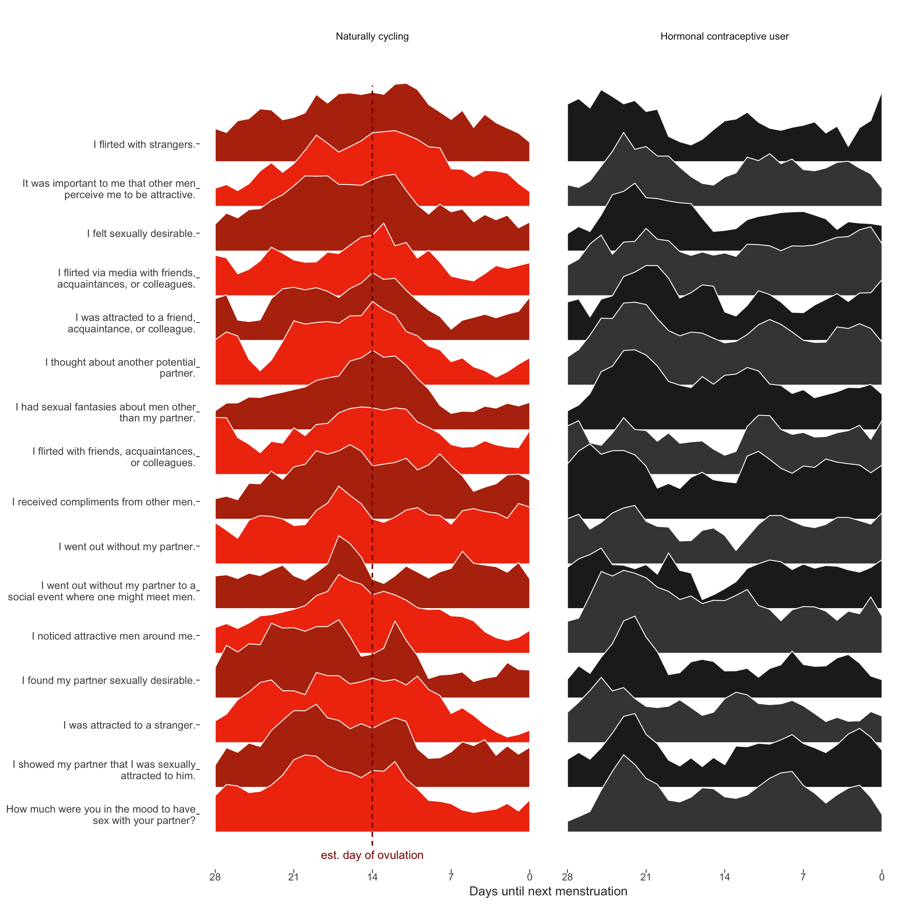
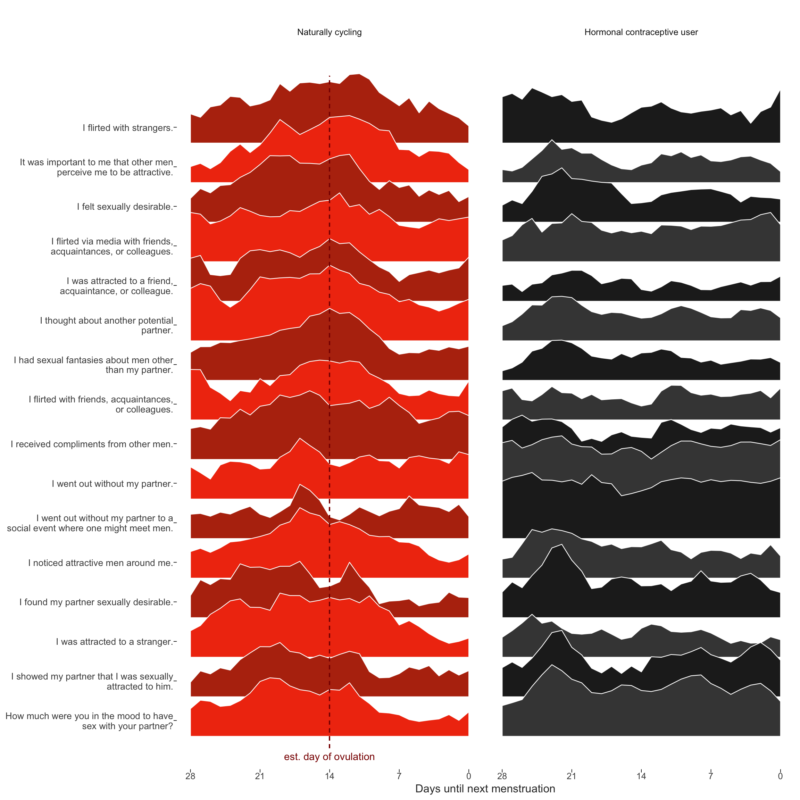

Cycling women (not on hormonal birth control)
Women on hormonal birth control
library(knitr)
opts_chunk$set(fig.width = 12, fig.height = 12, cache = F, warning = F, message = F)library(formr); library(data.table); library(stringr); library(ggplot2); library(plyr); library(dplyr);library(car); library(psych);
source("0_helpers.R")
library(brms)
load("full_data.rdata")
diary$included = diary$included_all
diary_long = diary %>% group_by(person) %>%
filter(!is.na(included_all), !is.na(fertile_fab)) %>%
mutate(included = included_all,
fertile = fertile_fab,
fertile_mean = mean(fertile_fab, na.rm = T)) %>%
select(person, menstruation, RCD_inferred, fertile_mean, fertile, fertile_fab, included, extra_pair_2, extra_pair_3, extra_pair_4, extra_pair_5, extra_pair_6, extra_pair_7, extra_pair_8, extra_pair_9, extra_pair_10, extra_pair_11, extra_pair_12, extra_pair_13) %>%
tidyr::gather(variable, value, -person, -menstruation, -fertile_mean,-fertile, -fertile_fab, -included, -RCD_inferred)
items = readxl::read_xlsx("item_tables/Daily_items_bearbeitetAM.xlsx", 1) %>% rename(`Item.name` = `Item name`)
diary_long = diary_long %>% left_join(items %>% select(Item.name, Item), by = c("variable" = "Item.name"))Dan Engber helpfully pointed out that he inferred from the plot caption in the manuscript, that the curves reflected shapes standardised across hormonal contraceptive users and non-users. In fact, each curve shown was standardised within group, because we wanted to draw the eye to the differences in changes, not in mean levels. This leads to an inconsistency with the other graph by group, where mean levels play a role too. Unfortunately, we did not explain this inconsistency in the text. Here, I show the same graph, but standardised only by item and not within the groups of HC users and non-users. We still see what looks like “post-menstrual catch-up” in in-pair sexual desire for hormonal contraceptive users. Importantly, the pattern we see for non-hormonal contraceptive users may also include some such post-menstrual catch-up (although it’s less visible against the background of ovulatory change). So as not to confuse such non-ovulatory cyclical changes (which may be behaviorally driven rather than hormonally) with those related to ovulation, we used the hormonal contraceptive users as quasi-control group.
theme_henrik <- function(grid=TRUE, legend.position=NA) {
th <- ggplot2::theme_minimal(base_size = 12)
th <- th + theme(text = element_text(color='#333333'))
th <- th + theme(legend.background = element_blank())
th <- th + theme(legend.key = element_blank())
# Straight out of hrbrthemes
if (inherits(grid, "character") | grid == TRUE) {
th <- th + theme(panel.grid=element_line(color="#cccccc", size=0.3))
th <- th + theme(panel.grid.major=element_line(color="#cccccc", size=0.3))
th <- th + theme(panel.grid.minor=element_line(color="#cccccc", size=0.15))
if (inherits(grid, "character")) {
if (regexpr("X", grid)[1] < 0) th <- th + theme(panel.grid.major.x=element_blank())
if (regexpr("Y", grid)[1] < 0) th <- th + theme(panel.grid.major.y=element_blank())
if (regexpr("x", grid)[1] < 0) th <- th + theme(panel.grid.minor.x=element_blank())
if (regexpr("y", grid)[1] < 0) th <- th + theme(panel.grid.minor.y=element_blank())
}
} else {
th <- th + theme(panel.grid=element_blank())
}
th <- th + theme(axis.text = element_text())
th <- th + theme(axis.ticks = element_blank())
th <- th + theme(axis.text.x=element_text(margin=margin(t=0.5)))
th <- th + theme(axis.text.y=element_text(margin=margin(r=0.5)))
th <- th + theme(plot.title = element_text(),
plot.subtitle = element_text(margin=margin(b=15)),
plot.caption = element_text(face='italic', size=10))
if (!is.na(legend.position)) th <- th + theme(legend.position = legend.position)
return (th)
}
diary %>% group_by(person) %>%
filter(!is.na(fertile_fab), !is.na(included_all),
RCD > -1 * minimum_cycle_length_diary, RCD > -29) %>%
filter(!is.na(included_all), !is.na(fertile_fab)) %>%
mutate(included = included_all,
fertile_mean = mean(fertile_fab, na.rm = T)) %>%
select(person, n_days, menstruation, RCD_inferred, fertile_mean, fertile_fab, included, extra_pair_2, extra_pair_3, extra_pair_4, extra_pair_5, extra_pair_6, extra_pair_7, extra_pair_8, extra_pair_9, extra_pair_10, extra_pair_11, extra_pair_12, extra_pair_13, desirability_partner, desirability_1, sexual_intercourse_1, attention_2
# ,extra_pair, in_pair_desire
) %>%
tidyr::gather(variable, value, -person, -menstruation, -fertile_mean, -fertile_fab, -included, -RCD_inferred, -n_days) %>%
left_join(items %>% select(Item.name, Item), by = c("variable" = "Item.name")) %>%
mutate(RCD_inferred = -1* RCD_inferred + 1, variable = factor(str_wrap(str_sub(Item,4),40))) %>%
filter(!is.na(value), RCD_inferred > -29) %>%
group_by(included, person, variable) %>%
mutate(value = value - min(value),
value = value / max(value)) %>%
group_by(included, Item, variable, RCD_inferred) %>%
summarise(value = mean(value, na.rm = T)) %>%
group_by(included, variable) %>%
arrange(RCD_inferred) %>%
mutate(
value_min = value - min(value),
p_peak = value_min / max(value_min), # Normalize as percentage of peak popularity
p_smooth = (
coalesce(lag(p_peak), p_peak[RCD_inferred==0]) + p_peak + coalesce(lead(p_peak), p_peak[RCD_inferred==-28])) / 3 # Moving average, accounting for cyclical nature
) %>% # When there's no lag or lead, we get NA. Use the pointwise data
group_by(included) %>%
mutate(variable = reorder(variable, p_smooth, FUN=which.max)) %>% # order by peak time
arrange(variable) %>%
mutate(variable.f = reorder(as.character(variable), desc(variable))) ->
item_timeseriests_plot = item_timeseries %>%
filter(!is.na(included)) %>%
{
items <- levels(.$variable)
ggplot(., aes(x = RCD_inferred, group = variable.f, fill = factor(paste0(included,as.integer(variable.f) %% 2)))) +
geom_ribbon(aes(ymin = as.integer(variable), ymax = as.integer(variable) + 2 * (p_smooth)), color='white', size=0.4) +
scale_x_continuous("Days until next menstruation", breaks = c(-0,-7,-14,-21,-28), labels = c("0","7","14","21","28")) +
# "Re-add" activities by names as labels in the Y scale
scale_y_continuous(breaks = 1:length(items) + 0.4, labels = function(y) {items[y]})+
# Zebra color for readability; will change colors of labels in Inkscape later
scale_fill_manual(values = c('horm_contra0' = '#444444', 'horm_contra1' = '#222222', 'cycling0' = '#F13B0E', 'cycling1' = '#B7320E'))+
ggtitle("") +
theme_henrik(grid='', legend.position='none') +
theme(
axis.ticks.x = element_line(size=0.3),
axis.ticks.y = element_line(size=0.3),
axis.text.y = element_text(size = 10))+
facet_wrap(~ included, labeller = labeller(included = c(`cycling` = 'Naturally cycling', `horm_contra` = 'Hormonal contraceptive user'))) +
geom_segment(aes(x = if_else(included=="cycling",-14,NA_real_), xend = if_else(included=="cycling",-14,NA_real_)), color = 'darkred', linetype = 'dashed', y = 0.7, yend = 17.7)+
geom_text(data = data.frame(included = 'cycling', variable.f = 1, RCD_inferred = -14), label = 'est. day of ovulation', color = 'darkred', y = 0.5)
}
ggsave(ts_plot, file = "item_timeseries.pdf", width = 10, height = 10)
ts_plot
diary %>% group_by(person) %>%
filter(!is.na(fertile_fab), !is.na(included_all),
RCD > -1 * minimum_cycle_length_diary, RCD > -29) %>%
filter(!is.na(included_all), !is.na(fertile_fab)) %>%
mutate(included = included_all,
fertile_mean = mean(fertile_fab, na.rm = T)) %>%
select(person, n_days, menstruation, RCD_inferred, fertile_mean, fertile_fab, included, extra_pair_2, extra_pair_3, extra_pair_4, extra_pair_5, extra_pair_6, extra_pair_7, extra_pair_8, extra_pair_9, extra_pair_10, extra_pair_11, extra_pair_12, extra_pair_13, desirability_partner, desirability_1, sexual_intercourse_1, attention_2
# ,extra_pair, in_pair_desire
) %>%
tidyr::gather(variable, value, -person, -menstruation, -fertile_mean, -fertile_fab, -included, -RCD_inferred, -n_days) %>%
left_join(items %>% select(Item.name, Item), by = c("variable" = "Item.name")) %>%
mutate(RCD_inferred = -1* RCD_inferred + 1, variable = factor(str_wrap(str_sub(Item,4),40))) %>%
filter(!is.na(value), RCD_inferred > -29) %>%
group_by(included, person, variable) %>%
mutate(value = value - min(value),
value = value / max(value)) %>%
group_by(included, Item, variable, RCD_inferred) %>%
summarise(value = mean(value, na.rm = T)) %>%
group_by(variable) %>%
arrange(RCD_inferred) %>%
mutate(
value_min = value - min(value),
p_peak = value_min / max(value_min)) %>%
group_by(included, variable) %>% # Normalize as percentage of peak popularity
mutate(
p_smooth = (
coalesce(lag(p_peak), p_peak[RCD_inferred==0]) + p_peak + coalesce(lead(p_peak), p_peak[RCD_inferred==-28])) / 3 # Moving average, accounting for cyclical nature
) %>% # When there's no lag or lead, we get NA. Use the pointwise data
group_by(included) %>%
mutate(variable = reorder(variable, p_smooth, FUN=which.max)) %>% # order by peak time
arrange(variable) %>%
mutate(variable.f = reorder(as.character(variable), desc(variable))) ->
item_timeseriests_plot = item_timeseries %>%
filter(!is.na(included)) %>%
{
items <- levels(.$variable)
ggplot(., aes(x = RCD_inferred, group = variable.f, fill = factor(paste0(included,as.integer(variable.f) %% 2)))) +
geom_ribbon(aes(ymin = as.integer(variable), ymax = as.integer(variable) + 2 * (p_smooth)), color='white', size=0.4) +
scale_x_continuous("Days until next menstruation", breaks = c(-0,-7,-14,-21,-28), labels = c("0","7","14","21","28")) +
# "Re-add" activities by names as labels in the Y scale
scale_y_continuous(breaks = 1:length(items) + 0.4, labels = function(y) {items[y]})+
# Zebra color for readability; will change colors of labels in Inkscape later
scale_fill_manual(values = c('horm_contra0' = '#444444', 'horm_contra1' = '#222222', 'cycling0' = '#F13B0E', 'cycling1' = '#B7320E'))+
ggtitle("") +
theme_henrik(grid='', legend.position='none') +
theme(
axis.ticks.x = element_line(size=0.3),
axis.ticks.y = element_line(size=0.3),
axis.text.y = element_text(size = 10))+
facet_wrap(~ included, labeller = labeller(included = c(`cycling` = 'Naturally cycling', `horm_contra` = 'Hormonal contraceptive user'))) +
geom_segment(aes(x = if_else(included=="cycling",-14,NA_real_), xend = if_else(included=="cycling",-14,NA_real_)), color = 'darkred', linetype = 'dashed', y = 0.7, yend = 17.7)+
geom_text(data = data.frame(included = 'cycling', variable.f = 1, RCD_inferred = -14), label = 'est. day of ovulation', color = 'darkred', y = 0.5)
}
ggsave(ts_plot, file = "item_timeseries2.pdf", width = 10, height = 10)
ts_plot